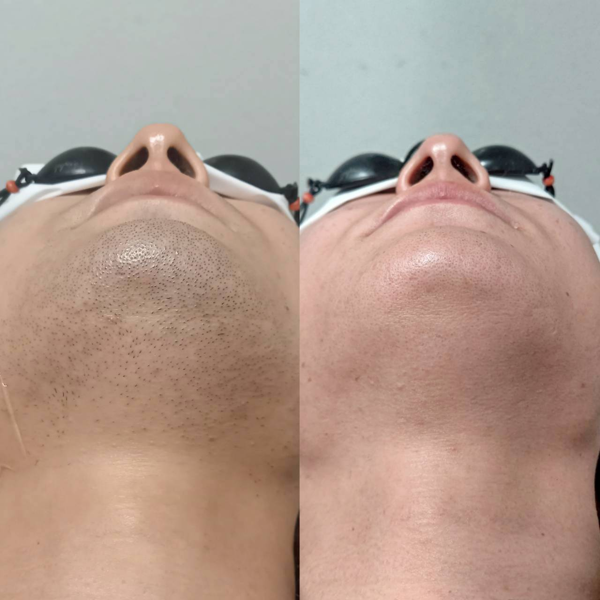

ヒゲ脱毛は何回で終わる?回数の目安

「ヒゲ脱毛は何回くらい通えば終わりますか」というご質問は、カウンセリングで最も多い質問のひとつです。今回はその目安についてお話しします。
毛には生えるサイクル(毛周期)があり、施術のタイミングで反応する毛としない毛があるため、1回で仕上がることはありません。個人差はありますが、3〜4回ほどで自己処理の頻度が減ったと感じ始める方が多く、ヒゲ全体でしっかりとした変化を実感するまでの目安としては8〜12回程度とご案内しています。
毛質・毛量・肌質によってこの目安は前後します。毛が濃く密集している方は回数を要することもあれば、もともと毛量が少ない部位は比較的早く落ち着きを感じる方もいます。実際の毛を拝見しないと正確な目安はお伝えしにくいため、カウンセリング時に毛質を確認したうえで、具体的な回数の見込みをお話ししています。
「何回で終わるか分からないまま契約するのが不安」という方は、都度払いで様子を見ながら通っていただくことも可能です。ご自身のペースに合わせてご相談ください。